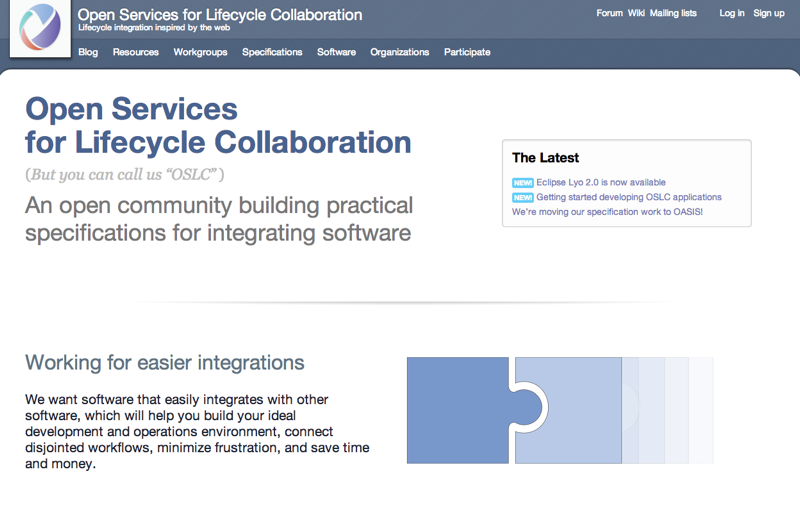

Why redesign?
Our current digs are a bit of a mess, that's why. I should know: I designed most of it.
A couple of years ago, we had like 5 html pages and an unlocked wiki where some awesome folks wrote some specs:

And here's where we are these days:

Now we've got a whole bunch more (roughly in the order that they were added):
- A blog with all the latest news
- A forum, where anyone can ask a question about OSLC
- A steering committee! (and a whole lot more legal documents)
- An updated wiki to support a more structured community
- Comprehensive and interconnected lists of the working groups, specifications, software, and organizations behind our community
- A growing list of tools and resources to help you learn more about OSLC and use it yourself
- Committees to write standards at OASIS
- A guide for developers to create OSLC applications
Most of this has just been bolted on to our existing design, and it shows. Displaying it all is a mess; it's tough to know quickly what's going on, where it's happening, and how you can contribute; names are haphazard (Is it "CM v2" or "OSLC Change Management version 2.0"?); there's a lot of relationships between content, but that's not always clear; and there's a growing pile of outdated content that we can probably clean up.
I'd like to clear that all up as best I can.
In the process, I'd like to also meet these goals:
- have a simpler, flexible design that can server as a framework for other OSLC assets. For example, the Eclipse Lyo site could surely use a refresh, too;
- implement that design with a more flexible, modular code base;
- improve the site's overall accessibility and make better use of progressive enhancement to make sure anyone that needs our content can get it;
- make the site faster;
- leave this redesign site on Github as a style guide, reference, and test area for others to reference.
Can you think of anything else I should be doing? Open up an issue and let's talk about it.